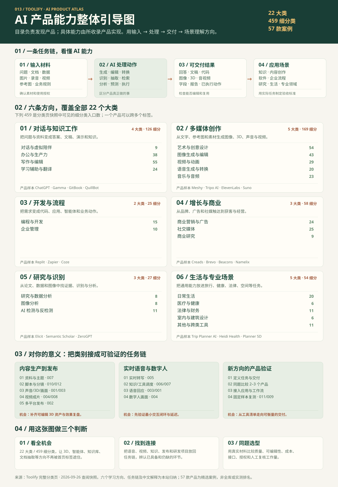

{kind=link}
这个库能做什么
Toolify 是 AI 产品发现目录：通过大类、细分类、榜单和产品页找到候选工具。目录本身帮助检索与比较；生成、识别、分析和自动执行由各个产品提供。
013 / TOOLIFY · OVERALL GUIDE · 2026.09
Toolify 通过分类、榜单和产品页帮助你发现候选 AI 工具；所收录产品分别提供对话、创作、开发、分析与自动化等能力。这张引导图把目录整理成“输入什么 → AI 做什么 → 交付什么 → 用在哪”的能力地图，再对照你已经研究过的项目，找出可组合的任务链与值得验证的方向。
本次目录快照
THE SHORT VERSION
先读这三段摘要，再用下方的完整引导图查看全部方向与连接。
Toolify 是 AI 产品发现目录：通过大类、细分类、榜单和产品页找到候选工具。目录本身帮助检索与比较；生成、识别、分析和自动执行由各个产品提供。
本次目录快照可见 22 个大类、459 个细分类。按学习任务可读成六条方向：对话与知识、多媒体创作、开发与流程、增长与商业、研究与识别、生活与专业场景；3D 模型也在其中。
为已有的语音、数字人、视频、知识与智能体项目定位候选产品，辨认链条缺口；再用同一份真实材料比较质量、可编辑性、成本和接入难度，决定下一步验证什么。
FULL GUIDE / ONE PAGE
使用已经生成的完整导图，汇总六个方向、22 个大类、任务链及对你的意义。点开图可放大阅读。

01 / HOW TO READ
同一个 Toolify 标签可能描述处理动作、内容媒介或应用场景；这些类别可以重叠，不能简单当作互斥行业。
问题与资料
文档与数据
图片与 3D 参考
语音与视频
业务规则
生成 · 编辑 · 转换
识别 · 抽取 · 检索
分析 · 预测
调用工具 · 执行流程
回答、摘要、代码
字段、图表、报告
图像、模型、音视频
已安排或执行的动作
知识与办公
内容创作与传播
软件与业务流程
研究和专业场景
02 / COMPLETE LANDSCAPE
六条方向是本站为了理解产品而重组的视角。下列大类与数字对应 Toolify 本次可见的 459 条细分类；点击大类可继续查看每一条中文解释和原始分类链接。
把问题和资料变成答案、文章、演示、翻译与可检索知识。
常见交付 问答 · 摘要 · 文稿 · 演示 · 学习材料
产品样本 ChatGPT · Gamma · GitBook · QuillBot
把文字、参考图和原始素材变成图像、3D、音乐、语音和视频。
常见交付 视觉资产 · 3D 模型 · 配音 · 音乐 · 视频
产品样本 Meshy · Tripo AI · ElevenLabs · Suno
把需求变成应用、代码、智能体与可执行的业务流程。
常见交付 代码 · 应用原型 · 自动化动作 · 服务流程
产品样本 Replit · Zapier · Coze
从商业想法到品牌、广告、获客、社媒发布和经营分析。
常见交付 名称 · 文案 · 创意 · 线索 · 内容排期
产品样本 Creads · Brevo · Beacons · Namelix
从论文、表格、图片或文本中提取信息、判断模式与检查来源。
常见交付 文献线索 · 识别文本 · 分析报告 · 检测提示
产品样本 Elicit · Semantic Scholar · ZeroGPT · ImageToText.info
把通用能力放进旅行、健康、法律财务、空间设计和新兴场景。
常见交付 行程 · 记录 · 合同线索 · 空间方案
产品样本 Trip Planner AI · Heidi Health · Syft Analytics · Planner 5D
Toolify 把“3D 模型生成”“图片转 3D”“文字生成 3D”放在艺术设计细分类。模型资产、空间方案和游戏成品的交付标准不同，选工具时应分别验证拓扑、贴图、骨骼、格式与交互。
03 / CONNECT TO YOUR PROJECTS
下面的连接依据仓库现有研究笔记提出，表示可探索的组合路径；跨项目接口、成本与端到端效果仍需实测。
适合个人 IP、知识讲解、系列短视频。
你的意义 Toolify 用来发现每个环节的候选产品；现有项目帮助你判断哪里已有能力、哪里还缺 3D 资产或效果评估。
适合导览、客服、互动讲解。
你的意义 “智能体”“知识库”“转写”“配音”“数字人视频”是不同能力，组合后才是一条可交互体验；先验证最小闭环和延迟。
适合筛选 3D、文档抽取或新的专业场景。
你的意义 从“又发现一个 AI 工具”转为“它是否能在我的流程里稳定交付”；研究与架构材料可帮你设计评价方式。
04 / WHY IT MATTERS
它是判断产品方向的索引，也是一份给现有项目寻找下一步实验的清单。
首页大类之外，3D、智能体、知识库、文档提取、演示文稿、转写、游戏生成等细分类都能被明确找到。先确认能力存在，再决定是否值得做产品验证。
把“转写 → 理解 → 生成 → 配音/成片 → 发布”当作任务链，能更清楚地给 Voicebox、Fay、LiveTalking、MoneyPrinterTurbo 和发布工具安排位置。
同一细分类会收录能力差别很大的产品。拿你的实际资料做同题比较，检查结果、可编辑性、接口、权限、授权、总成本与人工复核工作量。
从现有研究出发，可先选一个明确缺口：3D 可编辑资产、文档结构化抽取、可追溯知识库或内容效果分析。每次只用一个真实任务做比较，不按类别数量或榜单名次选工具。
05 / USE THE MAP
把产品名称放在最后：任务越具体，越容易看清真正需要哪种能力。
例：把一段访谈录音做成带字幕的讲解短视频。
转写 → 摘要与脚本 → 配音/数字人 → 剪辑 → 发布。
去完整目录搜索“转写”“摘要”“数字人”“视频编辑”，再看实际产品。
比较准确率、可编辑性、耗时、成本、授权和接入难度。
来源与范围 以 2026-09-26 查阅的 Toolify 分类页 为目录快照：22 个大类、459 条可见细分类。57 款产品是本站精选案例；六个学习方向、中文解释、任务链和“对你的意义”是本站归纳。Toolify 分类会变化且可能交叉；产品描述不等于实测结论。
阅读研究笔记 ↗